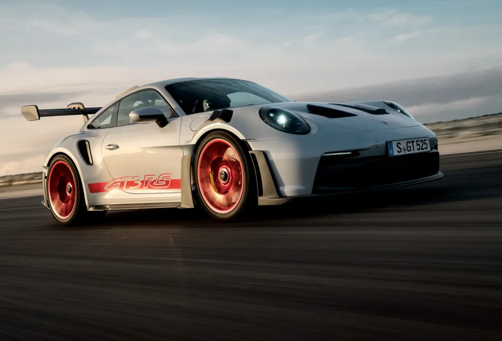
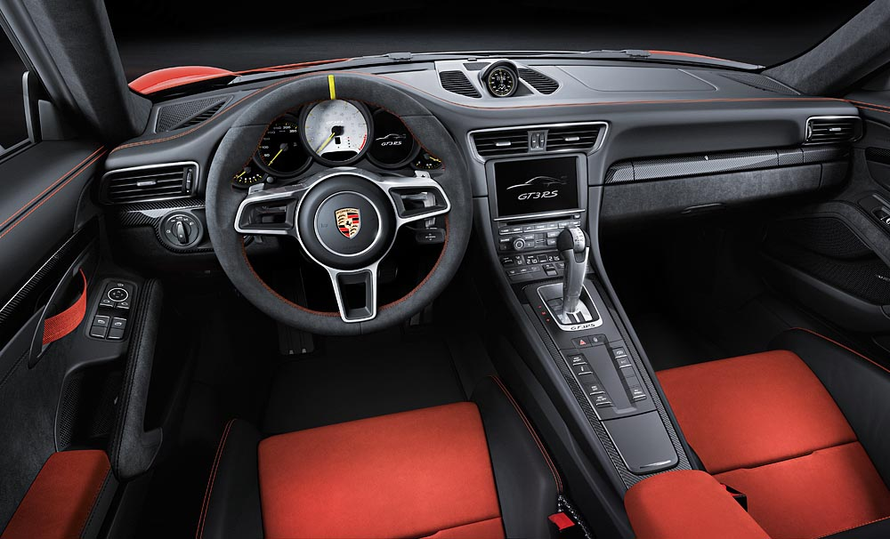

A versenypálya DNS-e az utcán
A Porsche 911 GT3 RS a Porsche egyik legextrémebb utcai modellje, amely közvetlenül a motorsportból származó technológiákat használ. Minden részletét a teljesítmény, a leszorítóerő és a precíz irányíthatóság maximalizálására tervezték.
Teljesítmény
0–100 km/h
Végsebesség
Az F1-ből inspirált DRS rendszer állítja a hátsó szárnyat.
Akár 860 kg leszorítóerő nagy sebességnél.
Karbon elemek és súlycsökkentett kialakítás.

4.0L szívó boxer
9000 rpm
7 sebességes PDK
Hátsókerék
A GT3 RS belső tere minimalista és versenyorientált. A karbon kagylóülések, Alcantara borítások és a digitális kijelzők mind a vezetési élményt szolgálják.
